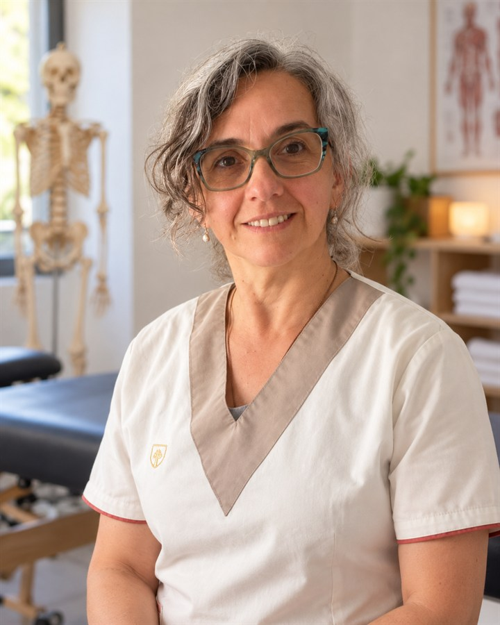

Osteopatía
Molestias de espalda, cuello o tensión al moverte. Conocé en qué consiste la Osteopatía y cuándo puede ser útil consultar
Atención profesional y cercana
¿Hay algo que te molesta o te cuesta hacer como antes? Estamos para escucharte. Conocé nuestros servicios en Osteopatía y Kinesiología
Elegi un área de atención o pedi orientación por WhatsApp

30 años
de trayectoria profesional
SOBRE GLORIA
Gloria Seimandi
Cada consulta es distinta. Nos interesa conocer qué necesitas y cómo podemos ayudarte
Áreas de atención
Conocé nuestras especialidades. Y si no sabes cuál elegir, escribinos. Te ayudamos a dar el primer paso
Molestias de espalda, cuello o tensión al moverte. Conocé en qué consiste la Osteopatía y cuándo puede ser útil consultar
Lesiones, molestias o movimientos que se volvieron difíciles. Conocé cómo puede ayudarte una consulta en Kinesiología
Consulta
Contanos qué necesitas y te ayudamos a coordinar una consulta
Preguntas frecuentes
Encontrá respuestas rápidas sobre la atención y cómo solicitar una consulta
Escribinos por WhatsAppNo pasa nada. Elegis esa opción al solicitar tu consulta y podes contarnos brevemente que molestia sentis
Completas tu nombre, elegis una opción y seguimos por WhatsApp. Te ayudamos a coordinarlo
En San Luis, Argentina. Al coordinar tu turno te compartimos la información del lugar
Depende de cada situación. No se puede definir una cantidad sin una evaluación profesional.
Escribinos por WhatsApp para hacer una consulta o solicitar un turno